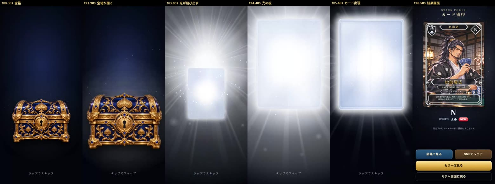
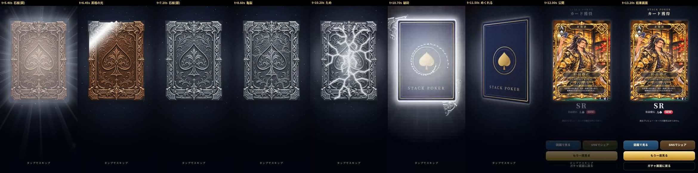
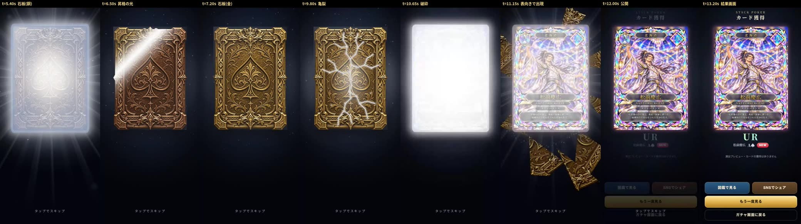
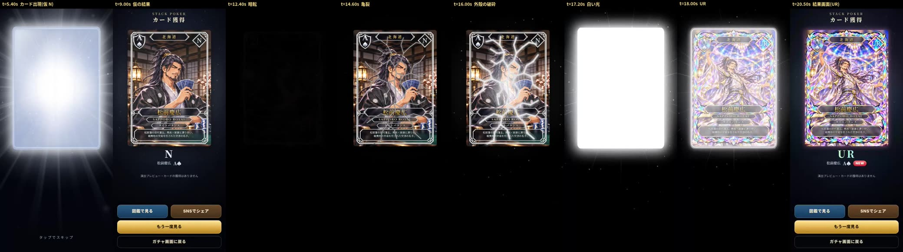
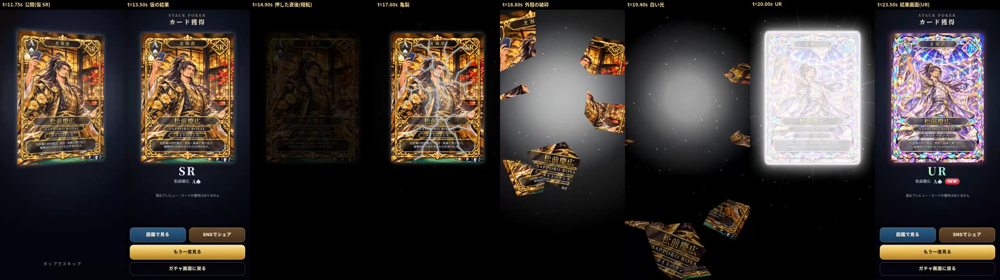

PR #206 の録画ツール(scripts/ai_browser_video_review.py)で録画。スマホを模した Chromium・390×844・音なし。iPhone 実機ではない。t は演出の開始からの秒(映像から測った。誤差 ±0.1秒程度)。動画の時刻は録画の開始から数えるので、video_offset_seconds だけ遅れる。
音あり: 録画ツールの録画は音なしなので、アプリと同じ予約の関数で書き出した効果音(ハイブリッド版。サウンド ON の状態)を、演出の開始に合わせて後から合成した(-16 LUFS)。iPhone で録った音ではない。
検証したページ: https://imasanori0111-jpn.github.io/-stack-poker-test-web/gacha-single-v1/(GS2 なし・ログインなし・実際の抽選なし)
全体の一覧(JSON): https://imasanori0111-jpn.github.io/-stack-poker-test-web/gacha-review-v1/index.json
https://imasanori0111-jpn.github.io/-stack-poker-test-web/gacha-review-v1/n/video.mp4https://imasanori0111-jpn.github.io/-stack-poker-test-web/gacha-review-v1/n/key-strip.jpghttps://imasanori0111-jpn.github.io/-stack-poker-test-web/gacha-review-v1/n/frames.json (43枚)
https://imasanori0111-jpn.github.io/-stack-poker-test-web/gacha-review-v1/sr-upgrade/video.mp4https://imasanori0111-jpn.github.io/-stack-poker-test-web/gacha-review-v1/sr-upgrade/key-strip.jpghttps://imasanori0111-jpn.github.io/-stack-poker-test-web/gacha-review-v1/sr-upgrade/frames.json (57枚)
https://imasanori0111-jpn.github.io/-stack-poker-test-web/gacha-review-v1/ur/video.mp4https://imasanori0111-jpn.github.io/-stack-poker-test-web/gacha-review-v1/ur/key-strip.jpghttps://imasanori0111-jpn.github.io/-stack-poker-test-web/gacha-review-v1/ur/frames.json (57枚)
https://imasanori0111-jpn.github.io/-stack-poker-test-web/gacha-review-v1/ur-reversal-auto/video.mp4https://imasanori0111-jpn.github.io/-stack-poker-test-web/gacha-review-v1/ur-reversal-auto/key-strip.jpghttps://imasanori0111-jpn.github.io/-stack-poker-test-web/gacha-review-v1/ur-reversal-auto/frames.json (89枚)
https://imasanori0111-jpn.github.io/-stack-poker-test-web/gacha-review-v1/ur-reversal-button/video.mp4https://imasanori0111-jpn.github.io/-stack-poker-test-web/gacha-review-v1/ur-reversal-button/key-strip.jpghttps://imasanori0111-jpn.github.io/-stack-poker-test-web/gacha-review-v1/ur-reversal-button/frames.json (98枚)